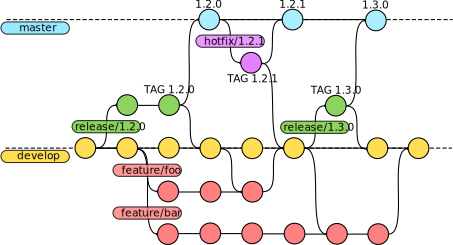

Development and programming paradigms
Continuous Integration
Danilo Pianini
2021-10-20Development
- Analysis of a domain
- Design of a solution
- Implementation
- Testing
Operations
- IT infrastructure
- Deployment
- Maintenance
Silo mentality

No silos

DevOps culture
-
Increased collaboration
- Dev and Ops should exchange information and work together
-
Shared responsibility
- A team is responsible for the (sub) product for its whole lifetime
- No handing over projects from devs to ops
-
Autonomous teams
- Lightweight decision making process
-
Focus on the process, not just the product
- Promote small, incremental changes
- Automate as much as possible
- Leverage the right tool for the job at hand
Why bother?
-
Risk management
- Reduce the probability of failure
- Detect defects before hitting the market
- Quickly react to problems
-
Resource exploitation
- Use human resources for human-y work
- Reduce time to market
- Embrace innovation
- Exploit emerging technologies
DevOps
- Principles
- Practices
- Tools
Principles inspire practices
Practices require tools
DevOps principles
(not exhaustive)
- Collaboration
- Reproducibility
- Automation
- Incrementality
- Robustness
DevOps practices
- Workflow organization
- Build automation
- Self-testing code
- Code quality control
- Continuous Integration
- Continuous Delivery
- Continuous Deployment
- Continuous Monitoring
Worflow organization
- Design a workflow that fits the team
- Delicate balance between chaotic organization and excessive bureaucracy
- The larger the team, the more control is usually needed
- Sparse teams and localized teams have different requisites
- Project progress is marked also by progress version control system
- Select a branching model model that matches the organization
- possibly, a forking model for certain kinds of organization
- Standardize the development environment
- Which newlines on which kind of files?
- What should be in tracking?
Version Control Systems
A system responsible for managing changes to the project files
- Records the history
- Enables roll-backs
- Promotes collaborative workflows
- Distributed vs. Centralized
- Every developer has a whole copy of the entire history
- There exist a central point of synchronization
- Also called Source Content Management (SCM)
Centralized Version Control Systems

Decentralized VCS

Real-world DVCS

Reference DVCS: Git
De-facto reference distributed version control system
- Distributed
- Differential tracking
- Born in 2005 to replace BitKeeper as SCM for the Linux kernel
- Performance was a major concern
- Written in C
- Developed by Linus Torvalds
- Now maintained by Hamano and others
- Unix-oriented
- Tracks Unix file permissions
- Very fast
- At conception, 10 times faster than Mercurial¹, 100 times faster than Bazaar
¹ Less difference now, Facebook vastly improved Mercurial
Funny historical introduction
Distributed version control with git: a recap
You should already be acquainted with the tool, this is an express guide/recap
Sub-commands and files are in monospace, concepts in italic
Distributed version control with git: a recap
Repository
- Collection of metadata containing the history of the project
- Reified in the
.gitfolder - The location of the
.gitfolder marks the root of the repository
Distributed version control with git: a recap
Working tree
- The directory associated with the root of your repository and its contents
- Contains the files tracked by git
- Not all files in the working tree are tracked
Distributed version control with git: a recap
git init
- Initializes a new repository from the current directory
Distributed version control with git: a recap
Stage
- The changes that will be saved next

Distributed version control with git: a recap
git add <files>
- Moves the current changes in
<files>into the stage
git reset <files>
- Removes the current changes to
<files>from the stage
Distributed version control with git: a recap
.gitignore
- A file listing the pathspecs that git should ignore even if added
- Adding is still possible via
--force
.gitattributes
- Defines attributes for path names
- Can enforce the correct line ending
- Can provide ways to diff binary file (by conversion to text, needs configuration)
- Example:
* text=auto eol=lf
*.[cC][mM][dD] text eol=crlf
*.[bB][aA][tT] text eol=crlf
*.[pP][sS]1 text eol=crlf
Distributed version control with git: a recap
git commit
- Create a new changeset with the contents of the stage
- Requires a message
- Using appropriate messages is extremely important
HEAD
- Pointer to the current commit
Distributed version control with git: a recap
git tag -a
- Associates a symbolic name to a commit
- Often used for versioning
- Advanced uses in Laboratory of Software Systems
Distributed version control with git: a recap
Branch
- A named development line

master
- Default branch name
- legacy of BitKeeper
- Modern versions of git let user select
- Some prefer
main
Distributed version control with git: a recap
git checkout
- Moves HEAD across commits
- Used to switch branches
- Can be used to create new branches (with
-b)
detached HEAD
- Special mode in which commits are not saved
- The system goes in detached HEAD when HEAD is not the last commit on a branch
Distributed version control with git: a recap
git branch
- Controls creation, visualization, and deletion (
-d) of branches
git merge
- Unifies a target branch with the current branch
- Creates a merge commit
- The merging algorithm is configurable
- Conflicts must be solved manually
fast-forward
- A special merge mode applicable when a branch is behind another
- The merge behind is updated without a commit
- Active by default, can be disabled (
--no-ff)
Distributed version control with git: a recap
Remote
- (possibly remote) locations hosting copies of branches of this repository exist
git remote
- Configures the remotes
upstream
- The default remote for network operations.
Distributed version control with git: a recap
git clone
- Copies a repository from a possibly remote location.
- Alternative to
init - Automatically sets the local branch upstream to the cloned location.
Distributed version control with git: a recap
git fetch <remote>
- Updates the state of
<remote> - If remote is omitted, updates the state of the branch upstream’s remote
git pull <remote> <branch>
- Shortcut for
git fetch && git merge FETCH_HEAD
git push <remote> <branch>
- Sends local changes remote branch
- Requires branches to share a root
- If remote and branch are omitted, updates are sent to the upstream
Advanced git
Discussed in Laboratory of Software Systems
- Lightweight vs. annotated tagging
- Stashing
- Rebasing
- Rebased pulling
- Squashing
- Cherry picking
- Submodules
- Hooks
Best practices
- The CLI is your truth
- Beware of the GUIs
- Prepare an ignore list early
- And maintain it
- And maybe prepare it manually and don’t copy/paste it
- When you have untracked files, decide whether you want to track them or ignore them
- Be very careful with what you track
- Prepare an attribute file
GitHub
- Hosting for git repositories
- Free for open source
- Some limitations for closed source
- Academic accounts
- De-facto standard for open source projects
- One static website per-project, per-user, and per-organization
- first-class support for Jellyll (a Ruby framework for static website generation)
DVCS: Workflows
with great power comes great responsibility
and also
power is nothing without control
Elements to consider:
- How large is the team?
- How complex is the project?
- Do team members work together (in spacetime)?
- Do team members trust each other?
Trunk-based development(-like)
Single branch, shared truth repository, frequent merges
- Small teams, low-complexity projects, colocated teams, high trust
- Typical of small company projects
Git flow (classic)
Multiple branches, shared truth repository

- Large teams, high-complexity projects, preferably colocated teams, high trust
- Typical of large company projects
Git flow structure
Forks versus branches
- In Git, separate development lines are separate branches
- However, everyone has a copy of the same repository
- Git hosting services can identify copies of the same project belonging to different users
These copies are called forks
- Branches on one fork can be requested to be merged on another fork
- With merge request (also called pull request, depending on the host)
- Pull requests enable easier code review
- Necessary when the developer does not trust the contributor
- But very useful anyway
- Working with pull requests is not part of git and requires host support
- GitHub, GitLab, and Bitbucket all support pull requests
Single branch, multiple forks
- Single branch, multiple independent repository copies

- Unknown team size, low-complexity projects, sparse teams, low trust
- Typical of small open source projects
Git flow over multiple forks
- Single branch, multiple independent repository copies

- Unknown team size, high-complexity projects, sparse teams, low trust
- Typical of complex source projects
Documenting projects using GitHub
Documentation of a project is part of the project
- Documentation must stay in the same repository of the project
- However, it should be accessible to non-developers
Meet GitHub Pages
- GitHub provides an automated way to publish webpages from Markdown text
- Markdown is a human readable markup language, easy to learn
- These slides are written in Markdown
- (generation is a bit richer, but just to make the point)
- Supports Jekyll (a Ruby framework for static website generation) out of the box
- We will not discuss it today
- But maybe in LSS…
Setting up a GitHub Pages website
Two possibilities:
- Select a branch to host the pages
- Create an orphan branch with
git checkout --orphan <branchname> - Write your website, one Markdown per page
- Push the new branch
- Create an orphan branch with
- Use a
docs/folder in a root of some branch- Could be
masteror any other branch
- Could be
Setting up a GitHub Pages website
Once done, enable GitHub pages on the repository settings:

GitHub Pages URLs
- Repository web-pages are available at
https://<username>.github.io/<reponame> - User web-pages are available at
https://<username>.github.io/- They are generated from a repository named
<username>.github.io
- They are generated from a repository named
- Organization web-pages are available at
https://<organization>.github.io/- They are generated from a repository named
<organization>.github.io
- They are generated from a repository named
The build “life cycle”
(Not to be confused with the system development life cycle (SDLC))
The process of creating tested deployable software artifacts
from source code
May include, depending on the system specifics:
- Source code manipulation and generation
- Source code quality assurance
- Dependency management
- Compilation, linking
- Binary manipulation
- Test execution
- Test quality assurance (e.g., coverage)
- API documentation
- Packaging
- Delivery
Lifecycle styles
-
Custom: select some phases that the product needs and perform them.
- Flexible and configurable: tailored on each project’s needs
- Hard to adapt and port
-
Standard: run a sequence of pre-defined actions/phases.
- Portable and easy to understand: replicated on every product
- Limited configuration options
Build automation
Automation of the build lifecycle
- In principle, the lifecycle could be executed manually
- In reality time is precious and repetitivy is boring
$\Rightarrow$ Create software that automates the building of some software!
- All those concerns that hold for sofware creation hold for build systems creation…
Build automation: basics and styles
Different lifecycle types generate different build automation styles
Imperative: write a script that tells the system what to do to get from code to artifacts
- Examples: make, cmake, Apache Ant
- Abstraction gap: verbose, repetitive
- Configuration (declarative) and actionable (imperative) logics mixed together
- Highly configurable
Declarative: adhere to some convention, customizing some settings
- Examples: Apache Maven
- Separation between what to do and how to do it
- The build system decides how to do the stuff
- Configuration limited by the provided options
Hybrid automators
Create a declarative infrastructure upon an imperative basis, and allow easy access to the underlying machinery
DSLs are helpful in this context: they can “hide” imperativity without ruling it out
Still, many challenges remain open:
- How to reuse the build logic?
- within a project, and among projects
- How to structure multiple logical and interdependent parts?
Dependency management
- Any software depends on other software
- The runtime environment (think of the Java Virtual Machine)
- The core libraries (e.g.,
java.*, orscala.*, orkotlin.*) - Possibly third-party libraries (e.g., Google Guava, Apache Commons…)
- Possibly external resources (e.g., images, sounds, translation files…)
- Normally, this software depends on other software
- That depends on other software
- That depends on other software
- That depends on other software, and so on…
- That depends on other software
- That depends on other software
- A normal applications has a tree of dependencies
Simple example: print titles
Example requirements:
- Visit TheTVDB.org (public TV Series database)
- Search for a TV series (e.g., Breaking Bad)
- Download and print titles of all episodes
Actual result
package it.unibo.ci;
import com.uwetrottmann.thetvdb.TheTvdb;
import org.apache.commons.io.IOUtils;
import retrofit2.Response;
import java.io.IOException;
import java.util.Objects;
import java.util.Optional;
import java.util.stream.IntStream;
import static java.nio.charset.StandardCharsets.UTF_8;
import static org.jooq.lambda.Unchecked.intFunction;
public final class PrintBreakingBad {
private PrintBreakingBad() { }
public static void main(String... args) throws IOException {
final TheTvdb api = new TheTvdb(IOUtils.toString(ClassLoader.getSystemResource("APIKey"), UTF_8));
Optional.of(api.search().series("Breaking Bad", null, null, null, "it").execute())
.filter(Response::isSuccessful)
.flatMap(response -> response.body().data.stream().findFirst())
.stream()
.flatMap(serie -> // Every serie becomes a stream of pages
IntStream.iterate(1, it -> it + 1)
.mapToObj(intFunction(page -> api.series().episodes(serie.id, page, "it").execute()))
.takeWhile(Response::isSuccessful)
)
.flatMap(it -> it.body().data.stream()) // every page becomes a stream of episodes
.map(it -> it.episodeName)
.filter(Objects::nonNull)
.forEach(System.out::println);
System.exit(0);
}
}
The trick: using a few libraries
- Jooq Jooλ
- Unchecked lambda functions
- Apache Commons I/O
ResourcetoString
- A library for TheTVDB
- Queries TheTVDB given a valid API key, hiding HTTP, communication, and parsing
Actual dependency tree
+--- commons-io:commons-io:+ -> 2.8.0
+--- com.uwetrottmann.thetvdb-java:thetvdb-java:+ -> 2.4.0
| +--- com.squareup.retrofit2:retrofit:2.6.2
| | \--- com.squareup.okhttp3:okhttp:3.12.0
| | \--- com.squareup.okio:okio:1.15.0
| \--- com.squareup.retrofit2:converter-gson:2.6.2
| +--- com.squareup.retrofit2:retrofit:2.6.2 (*)
| \--- com.google.code.gson:gson:2.8.5
\--- org.jooq:jool-java-8:+ -> 0.9.14
- three direct dependencies
- six transitive dependencies
In large projects, transitive dependencies often dominate
Towards a dependency hell
- It’s common for non-toy projects to get past 50 dependencies
- Searching, downloading and verifying compatibility by hand is unbearable
- Version conflicts arise soon
- one of your direct dependencies uses library A at version 1
- another uses library A at version 2
- $\Rightarrow$ transitive dependency conflict on A
- Upgrading by hand requires, time, effort and tons of testing
Dealing with dependencies
Source import
Duplication, more library code than business code, updates almost impossible, inconsistencies, unmaintainable
Binary import
Hard to update, toxic for the VCS
Desiderata
- Declarative specification of libraries and versions
- Automatic retrieval
- Automatic resolution of transitive dependencies
- Dependency scopes
- You may need compile-only, test-only, and runtime-only dependencies
- Customizable software sources
Gradle
A paradigmatic example of a hybrid automator:
- Written mostly in Java
- with an outer Groovy DSL
- …and, more recently, a Kotlin DSL
Our approach to Gradle
- We are going to learn a bit of how to use Gradle for simple JVM projects
- Mostly by example
- We are not going to learn Gradle
- Again, this is done in LSS for those interested
Gradle: main concepts
- Project – A collection of files composing the software
- The root project can contain subprojects
- Build file – A special file, with the build information
- situated in the root directory of a project
- instructs Gradle on the organization of the project
- Dependency – A resource required by some operation.
- May have dependencies itself
- Dependencies of dependencies are called transitive dependencies
- Configuration – A group of dependencies with three roles:
- Declare dependencies
- Resolve dependency declarations to actual artifacts/resources
- Present the dependencies to consumers in a suitable format
- Task – An atomic operation on the project, which can:
- have input and output files
- depend on other tasks (can be executed only if those are completed)
Gradle: under the hood
- The Gradle build script is a valid Kotlin script (using the Gradle API)
- Anything that has not a valid Kotlin syntax is not a valid Gradle build script
- Kotlin and Groovy picked as they allow easy DSL creation
- The feeling is to just have to configure an existing software
- Declarative, much like Maven plugins
- When needed, it is easy to configure custom behaviour
- fiddle with internals
- write in functional or imperative fashion
Gradle: minimal java build
- By default, Gradle inherits the maven convention for source organization:
+-- src # All sources
+-- main # One folder per "source set", all code in a source set shares dependencies
| +-- java # One folder per language
| +-- kotlin
| +-- resources # Resources go here
| \-- scala
\-- test # Test sources are separated, different dependencies
+-- java # Same structure as main
+-- kotlin
+-- resources # Resources go here
\-- scala
Gradle: minimal java build
src/main/java/HelloWorld.java
public class HelloWorld {
public static void main(String... args) {
System.out.println("Hello, world!");
}
}
build.gradle.kts
plugins { java }
Yes, it’s a one-liner
Gradle: minimal example execution
- The
gradlecommand accepts the names of tasks to execute as parameters - The
javaplugin introduces several tasks:compile<source set><language name>(e.g.,compileTestJava): compiles a specific source setcompile<language name>: compiles all source sets of a languagebuild: runs all compilation taskstasks: displays available tasks- usually used as
tasks --allto show also uncategorized tasks
- usually used as
Dependency management in Gradle
repositories
- Where to retrieve software from
- suggested ones are
mavenCentral()andgoogle() jcenter()is common but sunsetted (May 2021), do not use it
- suggested ones are
Dependency management in Gradle
dependencies
- Separated by scope
- Scopes define when a dependency should be available
api(libraries only): abstractions are exposed publicly and clients are expected to use themimplementation: used internally, clients should not caretestImplementation: used to compile and run tests- (
test)compileOnly: only available when compiling (typically used for annotations) - (
test)runtimeOnly: only required at runtime (typically used when components are loaded reflectively)
- Scopes map to configurations
- Scopes define when a dependency should be available
- Specified as
<group>:<artifact>:<version>+is a special marker for “latest”- Maven-style ranges supported (e.g., (1.2, 1.4])
- Transitive dependencies are resolved automatically (if available in some repository)
The build system as dependency
-
no guarantee that automation written with some tool at version
X, will work at versionY! -
$\Rightarrow$ The build system is itself a dependency
-
A global dependency on the build tool is hard to capture
-
Often, it becomes a prerequisite expressed in natural language
- e.g., “you need Maven 3.6.1 to build this software”
-
Critical issues when different pieces of the same system depend on different build tool versions
The Gradle wrapper
Gradle proposes a (partial) solution with the so-called Gradle wrapper
- A minimal program that simply downloads the version of gradle written in a configuration file
- Generable with the built-in task
wrappergradle wrapper --gradle-version=<VERSION>
- Prepares scripts for bash and cmd to run Gradle at the specified version
gradlewgradlew.bat
The Gradle wrapper is the correct way to use gradle, and we’ll be using it from now on.
Gradle: our toy example
src/main/java/it/unibo/ci/PrintBreakingBad.java
package it.unibo.ci;
import com.uwetrottmann.thetvdb.TheTvdb;
import org.apache.commons.io.IOUtils;
import retrofit2.Response;
import java.io.IOException;
import java.util.Objects;
import java.util.Optional;
import java.util.stream.IntStream;
import static java.nio.charset.StandardCharsets.UTF_8;
import static org.jooq.lambda.Unchecked.intFunction;
public final class PrintBreakingBad {
private PrintBreakingBad() { }
public static void main(String... args) throws IOException {
final TheTvdb api = new TheTvdb(IOUtils.toString(ClassLoader.getSystemResource("APIKey"), UTF_8));
Optional.of(api.search().series("Breaking Bad", null, null, null, "it").execute())
.filter(Response::isSuccessful)
.flatMap(response -> response.body().data.stream().findFirst())
.stream()
.flatMap(serie -> // Every serie becomes a stream of pages
IntStream.iterate(1, it -> it + 1)
.mapToObj(intFunction(page -> api.series().episodes(serie.id, page, "it").execute()))
.takeWhile(Response::isSuccessful)
)
.flatMap(it -> it.body().data.stream()) // every page becomes a stream of episodes
.map(it -> it.episodeName)
.filter(Objects::nonNull)
.forEach(System.out::println);
System.exit(0);
}
}
Gradle: our toy example
build.gradle.kts
plugins {
java
application
}
repositories {
mavenCentral()
}
dependencies {
implementation("commons-io:commons-io:+")
implementation("com.uwetrottmann.thetvdb-java:thetvdb-java:+")
implementation("org.jooq:jool-java-8:+")
}
application {
mainClassName = "it.unibo.ci.PrintBreakingBad"
}
settings.gradle.kts
rootProject.name = "dependency-management"
Gradle: toy example execution
- The
applicationplugin introduces aruntask:- Depends on
build - runs the specified main class passing the
runtimeClasspathto the-cpoption ofjava ./gradlewrun
- Depends on
Note: exectution requires a valid TheTVDB API Key in a plain text file src/main/resources/APIKey
Gradle: multi-language projects
src/main/groovy/HelloGroovy.groovy
println "Hello, Groovy"
src/main/java/HelloWorld.java
public class HelloWorld {
public static void main(String... args) {
System.out.println("Hello, world!");
}
}
Gradle: multi-language projects
src/main/kotlin/HelloKt.kt
fun main() {
println("Hello, world!")
}
src/main/scala/HelloScala.scala
object HelloScala extends App {
println("Hello Scala")
}
Gradle: multi-language projects
build.gradle.kts
plugins {
java
scala
groovy
kotlin("jvm") version "1.3.31"
}
repositories {
mavenCentral()
}
dependencies {
implementation("org.codehaus.groovy:groovy:2.3.7")
implementation(kotlin("stdlib"))
implementation("org.scala-lang:scala-library:2.12.2")
}
Quality Assurance
“It works” is not good enough
(besides, the very notion of “it works” is rather debatable)
- Software quality should be continuously assessed
- The assessment should automatic whenever possible
- QA should be integrated in the build system!
- It is fine to fail the build if quality criteria are not met
Quality Assurance: levels
- Style and coherence
- Flawed programming patterns
- Violations of the DRY principle
- Testing
- Multifaceted issue
- To be executed along the whole software lifecycle
- $\Rightarrow$ Plenty of detail in upcoming lectures
Quality Assurance: style and coherence
Automated checkers are also called linters, often provide an auto-formatting tool
Idiomatic and standardized code:
- reduces complexity
- improves understandandability
- prevents style-changing commits with unintelligible diffs
- lowers the maintenance burden and related costs
- simplifies code reviews
In Java: Checkstyle, PMD
In Kotlin: IDEA Inspection, Ktlint
In Scala: Scalafmt, Scalastyle
Quality Assurance: flawed programming patterns
Identification and reporting of patterns known to be problematic
- Early-interception of potential bugs
- Enforce good programming principles
- Improves performance
- Reduces complexity
- Reduces maintenance cost
In Kotlin: Detekt IDEA Inspection
In Scala: Scalafix, Wartremover
Quality Assurance: violations of the DRY principle
Code replicated rather than reused
- improves understandandability
- Reduces maintenance cost
- simplifies code reviews
General advice: never copy/paste your code
- If you need to copy something, you probably need to refactor something
Multi-language tool: Copy/Paste Detector (CPD) (part of PMD)
Quality Assurance: testing and coverage
Automated software verification
- Unit level
- Integration testing
- End-to-end testing
Extension of testing can be evaluated via coverage.
- Coverage tells you how much code is untested, not how much is tested
Several frameworks, recommended ones:
- Testing for all JVM languages: Junit/Jupiter (JUnit 5)
- Testing for Kotlin: Kotest
- Testing for Scala: Scalatest
- Coverage for all JVM languages: JaCoCo
- Coverage for Scala: Scoverage
Quality Assurance: JUnit + Gradle
src/main/scala/it/unibo/test/Test.scala
package it.unibo.test
trait Sometrait {
def f: Int
def g: Int
}
object Someobject {
def f = 10
def g = 77
}
Quality Assurance: JUnit + Gradle
src/test/scala/MyTest.scala
import it.unibo.test.{Someobject, Sometrait}
import org.junit.jupiter.api.Assertions._
import org.junit.jupiter.api.Test
class MyTest {
@Test
def emptySetShouldHaveSizeZero(): Unit = {
assertEquals(0, Set.empty.size)
}
@Test
def thisTestIsActuallyUseless(): Unit = {
val someStub = new Sometrait {
override def f: Int = 42
override def g: Int = ???
}
assertEquals(42, someStub.f)
assertNotEquals(Someobject.f, someStub.f)
}
}
Quality Assurance: JUnit + Gradle
build.gradle.kts
plugins {
java
scala
jacoco
}
repositories {
mavenCentral()
}
dependencies {
implementation("org.scala-lang:scala-library:+")
testImplementation("org.junit.jupiter:junit-jupiter-api:+")
testRuntimeOnly("org.junit.jupiter:junit-jupiter-engine:+")
}
// Enables JUnit Platform (needed for JUnit 5)
tasks.named<Test>("test") {
useJUnitPlatform()
}
Quality Assurance: Scalatest + Scoverage
Let’s switch testing framework and enable coverage
src/main/scala/it/unibo/test/Test.scala
package it.unibo.test
trait Sometrait {
def f: Int
def g: Int
}
object Someobject {
def f = 10
def g = 77
}
Quality Assurance: Scalatest + Scoverage
src/test/scala/Test.scala
import it.unibo.test.Sometrait
import org.scalamock.scalatest.MockFactory
import org.scalatest.funsuite.AnyFunSuite
class MyTests extends AnyFunSuite with MockFactory {
test("An empty Set should have size 0") {
println("Test1")
assert(Set.empty.size == 0)
}
test("Some useless test") {
println("Test2")
val someStub = stub[Sometrait]
(someStub.f _).when().returns(42)
assert(someStub.f == 42)
}
}
Quality Assurance: Scalatest + Scoverage
build.gradle.kts
plugins {
java
scala
id("org.scoverage") version "5.0.0"
id("com.github.maiflai.scalatest") version "0.31"
}
repositories {
mavenCentral()
}
dependencies {
implementation("org.scala-lang:scala-library:+")
testImplementation("org.scalatest:scalatest_2.13:+")
testImplementation("org.scalamock:scalamock_2.13:+")
testRuntimeOnly("com.vladsch.flexmark:flexmark-profile-pegdown:0.36.8")
scoverage("org.scoverage:scalac-scoverage-plugin_2.13:+")
scoverage("org.scoverage:scalac-scoverage-runtime_2.13:+")
}
// gradle clean reportScoverage
Gradle: QA execution
- The
javaplugin (applied by thescalaplugin under the hood) also introduces:test: a task that runs all testscheck: a task that runs the whole quality assurance suite
Additional checks and reportings
There exist a number of recommended services that provide additional QA and reports.
Non exhaustive list:
- Codecov.io
- Code coverage
- Supports Jacoco XML reports
- Nice data reporting system
- Sonarcloud
- Multiple measures, covering reliability, security, maintainability, duplication, complexity…
- Codacy
- Automated software QA for several languages
- Code Factor
- Automated software QA
Continuous Integration
The practice of integrating code with the main development line continuously
Verifying that the build remains intact
- Requires build automation to be in place
- Requires testing to be in place
- Pivot point of the DevOps practices
- Historically introduced by the extreme programming (XP) community
- Now widespread in the larger DevOps community
The Integration Hell
- Traditional software development takes several months for “integrating” a couple of years of development
- The longer there is no integrated project, the higher the risk


Microreleases and protoduction
- High frequency integration may lead to high frequency releases
- Possibly, one per commit
- Of course, versioning must be appropriate…
Traditionally, protoduction is jargon for a prototype that ends up in production

- Traditionally used with a negative meaning
- It implied software
- unfinished,
- unpolished,
- badly designed
- Very common, unfortunately
- It implied software
- This si different in a continuously integrated environment
- Incrementality is fostered
- Partial features are up to date with the mainline
Intensive operations should be elsewhere
- The build process should be rich and fast
- Operations requiring a long time should be automated
- And run somewhere else than devs' PCs

Continuous integration software
Software that promotes CI practices should:
- Provide clean environments for compilation/testing
- Provide a wide range of environments
- Matching the relevant specifications of the actual targets
- High degree of configurability
- Possibly, declarative configuration
- A notification system to alert about failures or issues
- Support for authentication and deployment to external services
Plenty of integrators on the market
- GitHub Actions, Circle CI, Travis CI, Werker, done.io, Codefresh, Codeship, Bitbucket Pipelines…
Core concepts
Naming and organization is variable across platforms, but in general:
- One or more pipelines can be associated to events
- For instance, a new commit, an update to a pull request, or a timeout
- Every pipeline is composed of a sequence of operations (jobs, stages, phases)
- Every operation could be composed of sequential or parallel sub-operations (jobs, phases, steps)
- How many hierarchical levels are available depends on the specific platform
- GitHub Actions: workflow $\Rightarrow$ job $\Rightarrow$ step
- Travis CI: build $\Rightarrow$ stage $\Rightarrow$ job $\Rightarrow$ phase
- Execution happens in a fresh system (virtual machine or container)
- Often containers inside virtual machines
- The specific point of the hierarchy at which the VM/container is spawned depends on the CI platform
CI in GitHub Actions
- Very open-source friendly
- Integrated in GitHub
- Less mature than other integrators
- My personal feeling is that it was built bottom-up…
- Some questionable limitations
- A lot of parallelism (20 concurrent jobs, 5 for MacOS X)
CI in GitHub Actions
step
- A (possibly named) command or sequence of commands
- Can be executed on the virtual machine or inside a container
- Defines success or failure
- Usually, the return value of the last command
action
- A reusable step
- DRY in CI $\Rightarrow$ Laboratory of Software Systems
CI in GitHub Actions
job
- A sequence of steps that run in parallel
- Executed on a virtual machine
- A job is successful if all its steps are successful
- Multiple jobs can be spawned at once via matrix expansion
- e.g., spawn one job for each OS and version of the JVM
- CI Matrix expansion $\Rightarrow$ Laboratory of Software Systems
workflow
- A named sequence of steps
- There can be multiple workflows per repository
- Workflows are isolated
GitHub Actions: Configuration
Workflows are configured in the .github/workflows/ folder of the repository
- One YAML file per workflow
- GHA YAML is (sic) non-standard
- DRY is limited: no anchors, no merge keys
- In the following, I assume you know YAML
- You can learn it in minutes
- Just remember that anchors and merge keys are not supported
GitHub Actions: Triggering event
Workflows react to events
- Events that trigger a workflow are specified under the
onkey
on:
push: # Trigger the workflow on push
branches:
- main # but only for the main branch
pull_request: # Also trigger for pull requests
branches:
- main # but only for the main branch
page_build: # Also trigger on page_build
release: # Also trigger on release...
types:
- created # ...created
schedule:
- cron: '*/30 5,17 * * *' # Cron syntax (see crontab.guru)
GitHub Actions: Environment preparation
GitHub actions job run on a fresh virtual machine
- The operating system can be selected (Windows, Ubuntu, MacOS X)
- Multi OS builds $\Rightarrow$ Laboratory of Software Systems
- The repository needs to be cloned manually
- Any operation should be configured manually
Rather than convention over configuration, GHA use actions as a form of configuration reuse
- Actions can be found on the GH marketplace
- Developing new actions $\Rightarrow$ Laboratory of Software Systems
GitHub Actions: a simple gradle build
name: Clone Repository
on:
push: # On every push on any branch
jobs:
Build: # Job name
runs-on: ubuntu-latest # Operating system selection
env: # Environment can be controlled at the job or step level
TERM: dumb # Sets the environment variable TERM to "dumb"
steps:
- name: Checkout # custom name Checkout the repository
uses: actions/checkout@v2 # Action implemented in this repository, tag "2"
- uses: joschi/setup-jdk@v2.3.0 # Action implemented in repository "joschi/setup-jdk" tag "2.3.0"
with: # Actions parameters (action name omitted)
java-version: 15
- name: Build
run: ./gradlew check
Automated delivery
Once the reference environment in CI completed the software construction and testing, it should sign and then deliver the result.
- Possibly, even deploy the result, putting it at work
Some delivery targets
- GitHub releases
- Retract, language agnostic, good for releases
- Sonatype OSSRH (a.k.a. Maven Central)
- De-facto standard for JVM products, no retract policy
- GitHub packages
- No retract, authentication required also in read mode, immature
JFrog Bintray✝ 2021-05-01- Maven Central + other stuff
In this repository, delivery is enabled towards all the aforementioned destinations
No-retract
Your error will remain in the repositories forever and you will never be able to fix it, you will need to create a new release with a different version number.
Anectodal apology of no-retract policies
In March 2016, Azer Koçlu unpublished more than 250 of his modules
from NPM, which is a popular package manager used by Javascript
projects to install dependencies, because he was asked to rename the
module Kik, whose name is the same of an instant messaging app that
wanted to publish a homonym module.
Unfortunately, one of those dependencies was left-pad, a 11-line-long
Javascript module, used by thousands of projects. This brought
breackages throughout many Javascript products (most notably Node and
Babel). NPM had to un-unpublish left-pad.
Picking version numbers
Without compliance to some sort of formal specification, version numbers are essentially useless for dependency management. By giving a name and clear definition to the above ideas, it becomes easy to communicate your intentions to the users of your software.
Semantic versioning
- Formally described, RFC-style
- Three levels plus optional:
MAJOR.MINOR.PATCH[-OTHER][+BUILD]MAJOR— Any incompatible API change- Major
0is for initial development: anything may change at any time.
- Major
MINOR— Add functionality in a backwards-compatible mannerPATCH— Backwards-compatible bug fixesOTHER— Optionally decorates the version with additional information.BUILD— Optionally decorates the version with build information.
- First release:
0.1.0,1.0.0formalizes the API